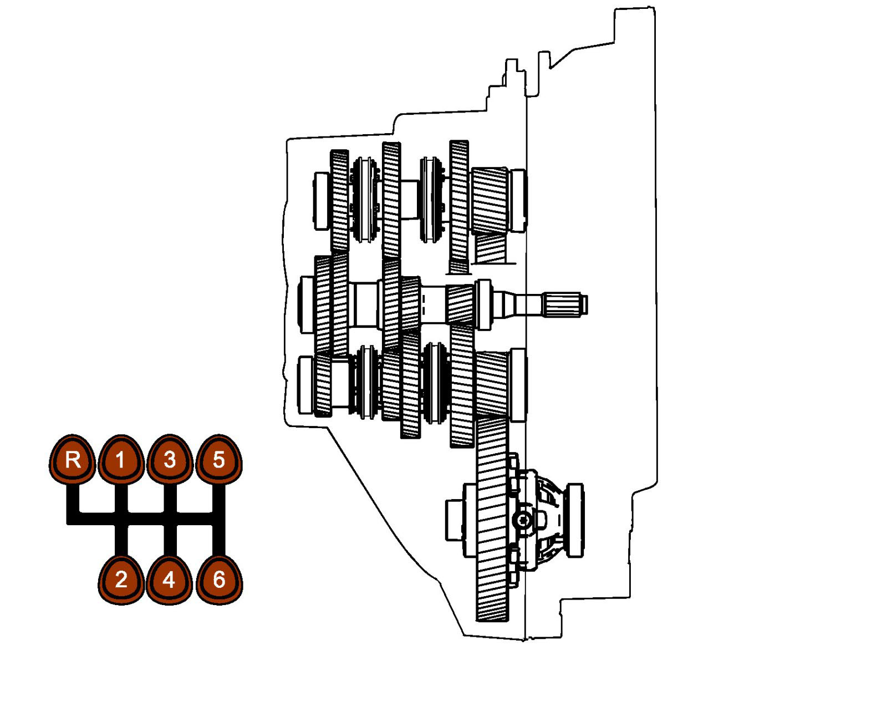

Operation CHARM
: Car repair manuals for everyone.
Home
>>
Saab
>>
2011
>>
9-3 FWD (9440) L4-2.0L Turbo
>>
Repair and Diagnosis
>>
Transmission and Drivetrain
>>
Manual Transmission/Transaxle
>>
Description and Operation
>>
Power Flow Animation
Power Flow Animation
Power flow animation

Press the gear positions for the power flow of the different gears. Neutral is in the center.